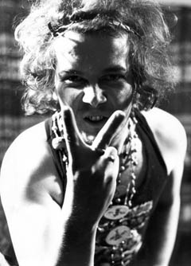
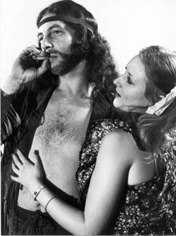
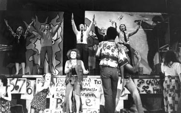

Chapter 3. Hair (Genesis Theatre)
A meeting was held by the 'management' of the Metropolitan on 23rd March 1976, wherein Robert William Bromley and company informed us that the next show was going to be West Side Story. We quite politely at first pointed out that we had created the show and had the right to a say in the next production. Robert William Bromley, being inexperienced and somewhat aloof from the whole camaraderie of the production by his own choice, had made himself completely unpopular. He overruled us.
 So we walked out on him, went to a nearby pub, held a little meeting of our own, and created Genesis Theatre. Graham Brittain became our chairman, with Arthur Dutton as the vice-chairman, and various others in a number of responsible roles. Our decision that night was to re-do Hair, as Genesis Theatre which we did on the 27th to the 30th October 1976 at the Lancastrian Theatre, Swinton.
As mentioned earlier, we had problems with the copyright owners regarding our alterations and Charles Manson references. Second time around, with advanced notice, they firmly refused to grant us permission to do the show with these references in. So this time they were gone, to be replaced by dialogue lifted from other areas of the show, which helped to serve the same purpose as previously but because it was in the original script they could not stop us doing it. You could mess around with original dialogue as much as you wanted, but you could not wholesale invent it or drag it in from elsewhere. So we were OK to go ahead.
 The band was largely as before except for Dave Sayer, a pro musician who had other commitments, who was replaced by Graham Gooch on Organ. All the main cast were identical, but a number of the family had gone to be replaced by new members. This swapping of people would continue throughout Genesis' lifespan, as people on the 'second rung' so to speak came and went whenever they wanted, but the hard core of about twelve people were always there.
The show went ahead very well indeed. It was more streamlined without the Charles Manson references and more humorous. Mike Cheesman really hammed it up this time as Claude and it was a much more balanced show as a result. This version of the show was also recorded and is interesting because it includes various songs written for Hair by the original writers, but discarded for one reason or another along the way. We discovered these extras via an album called "Fresh Hair", which explained that these were off-Broadway numbers that never made it to the final version. We received permission to include them, and the show changed quite considerably as a result. The press again were very nice to us, and afterward we finally put away our scripts and music for Hair for the last time.

A note in my scrapbooks at the time makes the comment that it was worth doing again so that we could completely get the show out of our system, but "would we ever do that?" I wondered. Looking back after twenty-six years I can state quite categorically, no we didn't. Whenever any of us get together as a group and someone plays the opening notes of Aquarius, the response is electric. I think everyone still knows his or her harmonies after more than two decades away from it.
So Hair was gone.
Long live Hair.
But what next for Genesis Theatre?